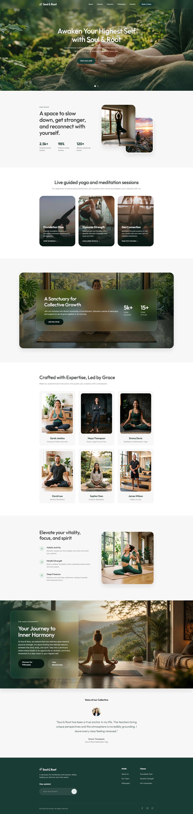
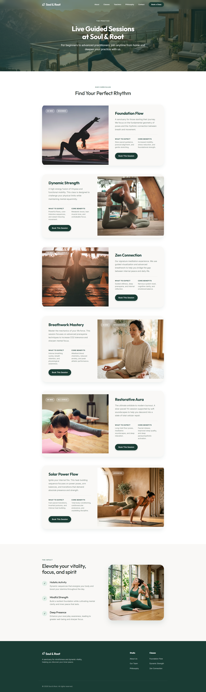
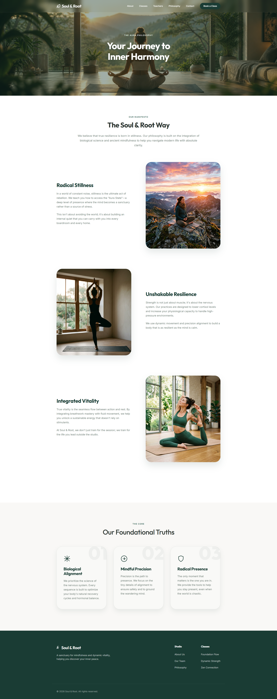
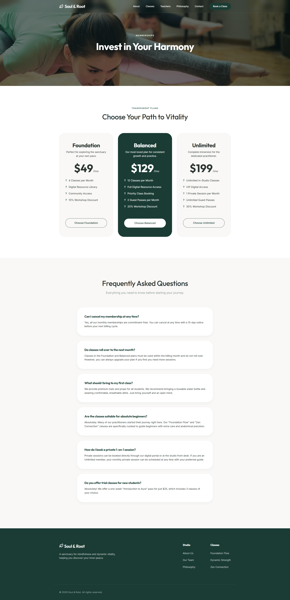
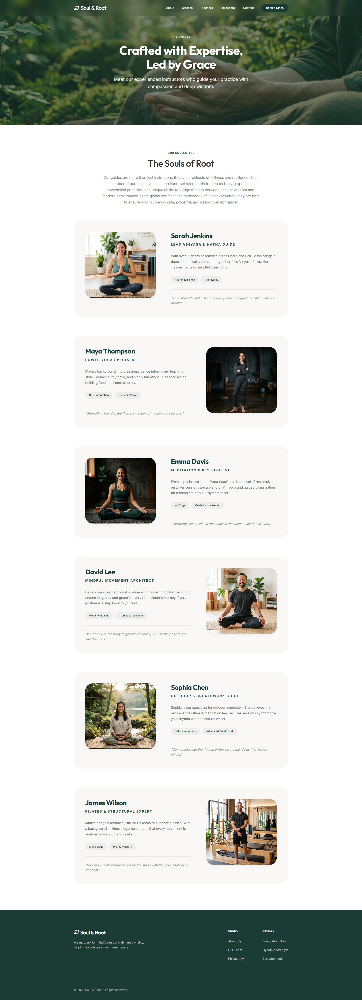
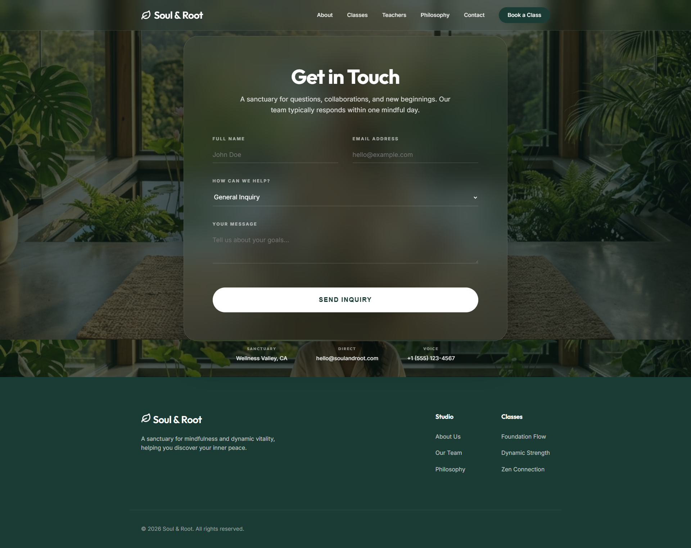

01
SOUL & ROOT // UX CASE STUDY
Digital
Digital
Sanctuary
Bridging the gap between ancient mindfulness and modern vitality through immersive, biophilic design.

Bridging the gap between ancient mindfulness and modern vitality through immersive, biophilic design.
Users are overwhelmed by cluttered wellness apps that increase anxiety rather than reducing it. The digital world lacks a true 'Quiet Space' for deep mindfulness.
We built Soul & Root on the principle of 'Silent Design'. By utilizing biophilic forms and a glassmorphism interface, we created a portal that fosters immediate physiological calm.
User Interviews
Market Audit
User Personas
Problem Brief
Wireframing
User Flows
Hi-Fi Interface
Aura System
Usability Audit
Final Launch
Marketing Director at a Tech Startup
Sarah wants to find a mental reset during her busy workday. She values premium experiences and needs a platform that doesn't feel like another 'task' on her list.
The Soul & Root icon is constructed on a 24x24 pixel grid, combining the organic curves of a seedling with the structural geometry of a sanctuary.
• Leaf/Seed: Growth and potential.
• Roots: Grounding and stability.
• Circle: Unity and focus.
A biophilic color system inspired by deep forest canopies and soft morning light, designed to reduce cognitive load and promote tranquility.
Headlines / Display
Body Copy / UI Elements




Designing for trust and accessibility through high-resolution guide profiles and a transparent contact sanctuary.
SYSTEM HIGHLIGHTS
• Glassmorphism Headers
• Pill-shaped Navigation
• Soft Shadow Elevations

